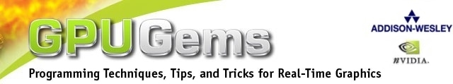

|  | ||||||||||||||
系统需求 每一章样例的的系统需求差别很大，但为了理想的性能，我们建议您使用NVIDIA GeForce FX、NVIDIA Quadro FX或 更新的图形处理器。另外，你可能需要更新你的图形驱动。你可以在这里找到最新的图形驱动。你需要用Microsoft Visual Studio来打开一些提供的项目。为了看到所有的例子，OpenGL、GLUT和DirectX也是必需的。很多可执行演示只能在运行有Microsoft Windows的PC上执行。 使用的法律限制 无担保。由NVIDIA提供给开发者的软件和任何其他材料都是按如下所声明的。NVIDIA放弃所有的保证、表示、暗示或法令，也没有限制，对名称、适售性、对特殊目的适用性和无侵权提供默许的担保。 责任范围。NVIDIA不对开发者、开发者的客户或任何其他人或实体声称的利润、收入、储蓄损失或任何其他伴随而生的、偶然发生的、特殊的、受到惩罚的、直接或间接的伤害（无论是否是合同中的行为、民事侵权行为或基于某个保证）负责，即使NVIDIA已经考虑过这些伤害的可能性。这些限制不论本身目的是否是有限的都起作用。开发者或其他任何人或实体声称的超过开发者为软件或任何其他材料真正支付给NVIDIA的钱数决不是NVIDIA的债务。 版权所有(C) 2004 NVIDIA(R) 公司。保留所有权利。任何公司和/或产品名都可能是与其相关的所有者的商标和/或注册的商标。 ______________________________________________________________
|
||||||||||||||